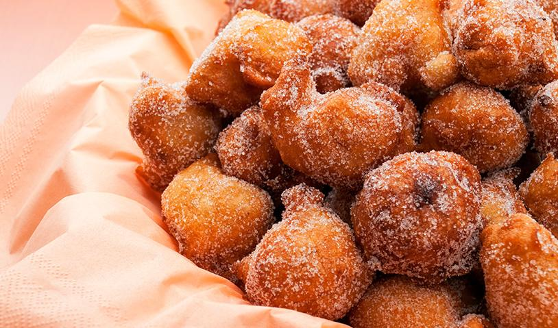

Fritter

This fried dumpling covered with sugar tastes delicious while also being
easy to make.
Ingredients
- 2 eggs
- 1 cup of sugar
- 1 cup(tea milk
- 2 e 1/2 cups all-purpose flour
- 1 tablespoons of baking powder
- 3 tablespoons of sugar for sprinkling
- 1 tablespoons cinnamon for sprinkling
- 1 liter of oil for frying
Steps
- Mix all the ingredients until obtaining a creamy and homogeneous mass.
- Heat a pan with plenty of oil so the dumplings can float.
- When the oil is very hot (356º F), with a spoon, start to put in small amounts of dough, and fry until golden all over.
- Place the cookies on absorbent paper and then roll them in the cinnamon sugar.
Main Page